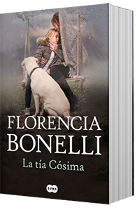
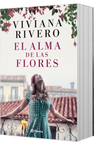
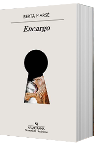
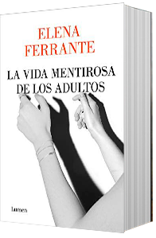
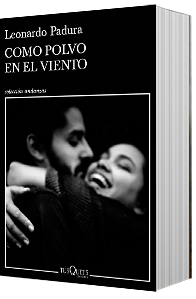
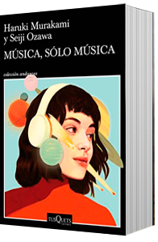
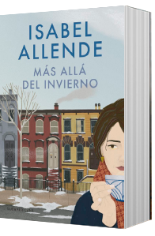

Leyendo ando
Home
About
Servicios
Autores
Novedades
Contacto
Buscar
Novedades
Octubre 2020

La Tía Cósima

El alma de las flores
Fin de temporada

Encargo

La vida mentirosa de los adultos

Como polvo en el viento

Música sólo música

Más allá del invierno